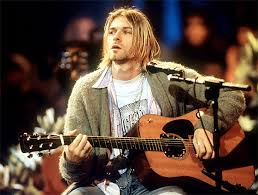

Kurt Donald Cobain (Aberdeen, 20 de febrero de 1967-Seattle, c. 5 de abril de 1994) fue un músico estadounidense, conocido por haber sido el vocalista, guitarrista y principal compositor de la banda de rock y grunge Nirvana.
Después de firmar con el sello DGC Records, la banda logró el éxito de manera inesperada con «Smells Like Teen Spirit», primer sencillo de su segundo álbum Nevermind (1991). Tras el éxito de Nevermind, Nirvana fue etiquetado como «la banda principal» de la generación X, y Cobain fue aclamado como «el portavoz de una generación».
Murió por suicidio el 5 de abril de 1994 a los 27 años en su casa de Seattle. La causa oficial fue una herida autoinfligida con una escopeta en la cabeza, encontrada junto a una nota de suicidio.